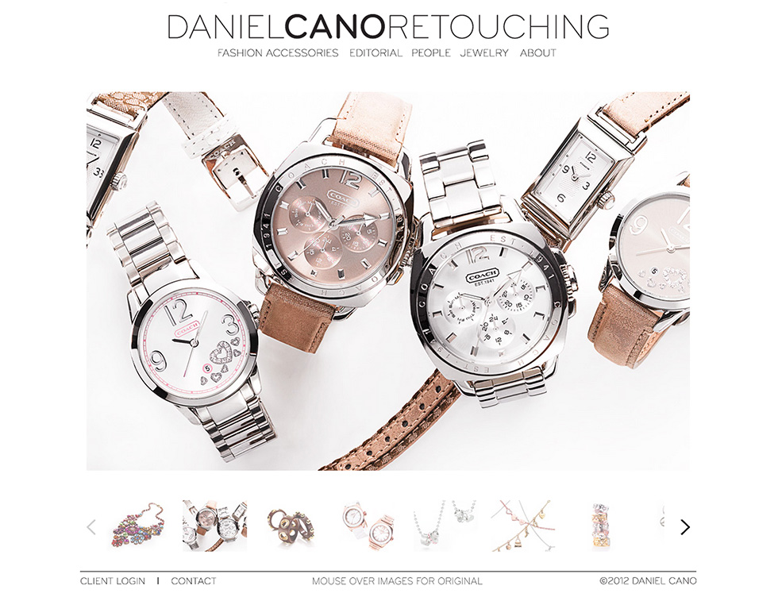
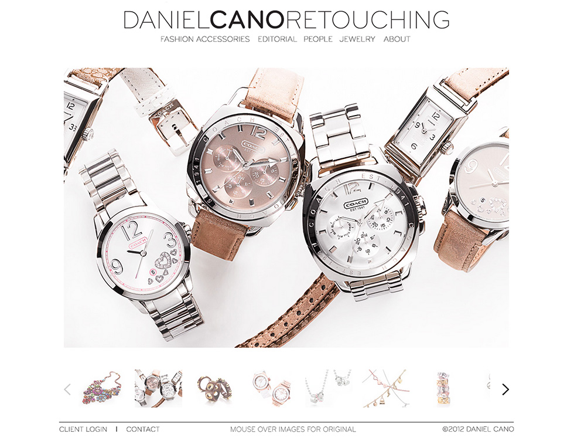

Speedpass+ is an app by Exxon Mobile that was released in limited locations in the summer of 2013. Tribal Worldwide was assigned the task of developing a promotional microsite for the app. We used twitter bootstrap to create a responsive one page experience. I developed the majority of the html and css myself as I was the main developer on the project with oversight from the tech lead.


 
